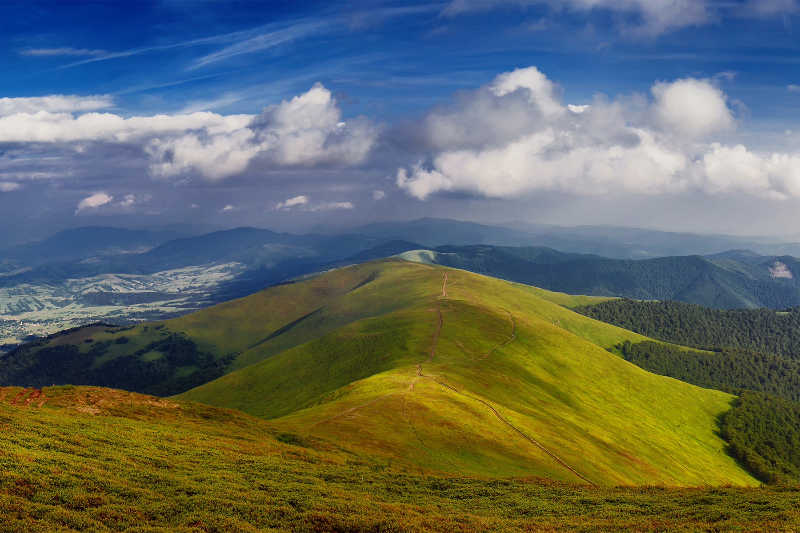
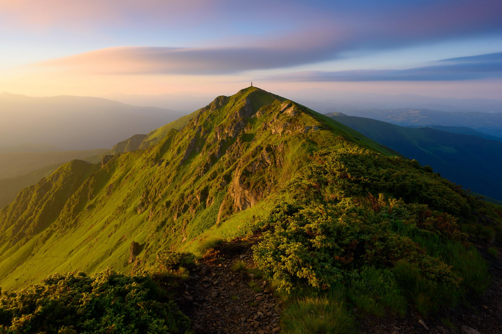

Поринути з головою в дивосвіт густих лісів, що плавним ходом перетікають до гірських вершин — це саме те, що характеризує Боржаву. З початку червня тут можна куштувати високогірні чорниці,
а в перервах споглядати зелені пейзажі на фоні блакиті неба. Взимку - милуватись засніженими краєвидами українських гір, попиваючи духмяний чай. Полонина Боржава напрочуд вигадлива, адже
може зачарувати як новачка, так і бувалого мандрівника. Чи не ідеальне місце для відпочинку в Карпатах, незалежно від пори року. Знаходиться Боржава на Полонинському хребті, що в Українських Карпат.
Оточує високогір’я річки Ріка та Віча. Колись полонина територіально відносилася до Міжгірського, Іршавського, Свалявського, Воловецького та частково Хустського районів Закарпаття.
Після адміністративно-територіальної реформи 2020 р. полонина Боржава тепер знаходиться в межах Мукачівського та Хустського районів.

Полонина Боржава, Карпати, Україна
Масив Мармароси, Закарпатська область
Такі асоціації в когось викликає одна з найвищих точок Мармароського масиву - гора Піп Іван Мармароський (1936 м), що знаходиться неподалік кордону Румунії в
Рахівському районі Закарпатської області. Краєвиди Мармароського масиву по своїй особливій будові нагадують гірські системи Європейських вершин та схилів,
через що їх прозвали Гуцульськими Альпами. Незважаючи на свою унікальність, її часто плутають з «старшим братом» - горою Піп Іван Чорногірський (2028 м),
що розташована на південно-східному кінці головного хребта масиву Чорногора, на межі Івано-Франківської та Закарпатської областей. Існує теорія стосовно
плутанини у назвах між Чорногірським та Мармароським Піп Іваном. Вважається, що топографи випадково внесли одну й ту ж назву на карту. По тій же причині
на просторах українських земель знаходяться дві зовсім різні вершини, що записані однією назвою Петрос. Тому, плануючи відпочинок в Карпатах, уважно дивіться
на карти та маршрути, щоб потім випадково не опинитись за десятки кілометрів від бажаного місця.

Піп Іван Мармароський, Карпати, Україна
Петрос Чорногірський, Закарпатська область
Гора Петрос — представник виду гір-двохтисячників, його висота складає 2020 метрів над рівнем моря.
Особливістю вершини є краєвид, що відкриває перед подорожнім пейзажі як з найвищої точки країни — Говерли. Цінність гори Петрос серед досвідчених
мандрівників в тому, що гора не настільки “мейнстрімна”, як та сама Говерла. Підіймаючись на вершину, ви не зустрінете на своєму шляху такої кількості туристів.
На Петрос йдуть осмислено − для процесу підйому та задля неперевершеного відчуття підкорення вершини, подарунком якого є чудесні види тутешніх гір та
Чорногірського масиву. На шляху до вершини вас зустрінуть численні кам’яні розсипища, кінематографічні скельні виступи та чарівна субальпійська рослинність.
Гора Петрос заслуговує вашої уваги, адже саме з цієї вершини мандрівники так сильно полюбляють робити фото. Особливої уваги заслуговують рододендрони.
Розквітає ця квітка в червні і радує око близько місяця, два тижні після початку цвітіння — час, коли варто йти на гору Петрос. Саме тоді високогір’я
вкривається пурпурово-рожевим килимом, який краще один раз побачити, ніж сто разів почути. Якщо ж ви встигли застати цю красу на височині, то в жодному
разі не зривайте квітів. Рододендрон занесений до ІІ категорії охорони Червоної книги України, та й виглядають пурпурові дзвіночки краще високо в горах, ніж в чиїсь кімнаті.